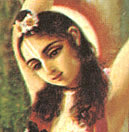

|

|
GADADHARA PANDITA is
among the group known as the Panca-tattva, consisting of Lord Caitanya Mahaprabhu
and four of His closest associates. Gadadhara Pandita spent most of his
life in Jagannatha Puri worshiping the Tota-Gopinatha Deity, who is still
worshiped in Puri. Gadadhara Pandita is considered an incarnation of Srimati
Radharani, the eternal consort of Sri Krsna. (See Sri Caitanya-caritamrta, Adi-lila 10.15 and 16.130- 148.) |
|
| © 2002-2004 ISKCON |